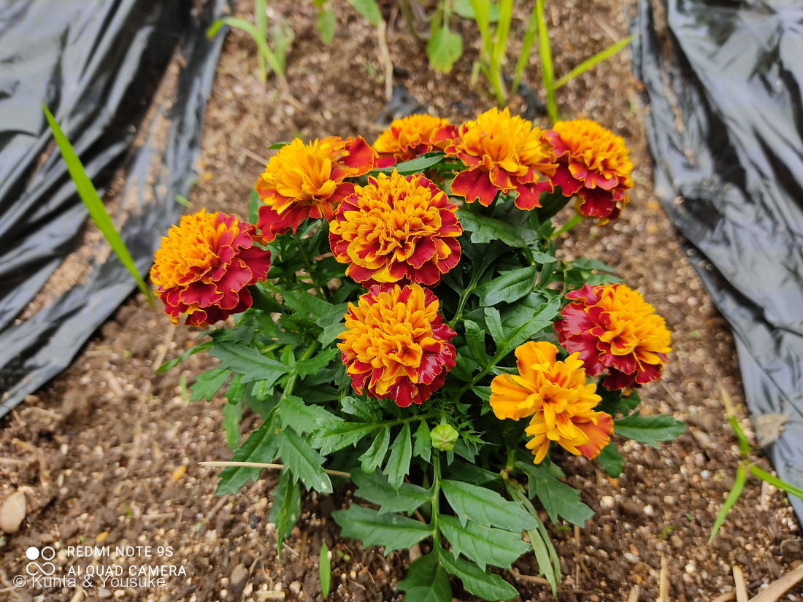
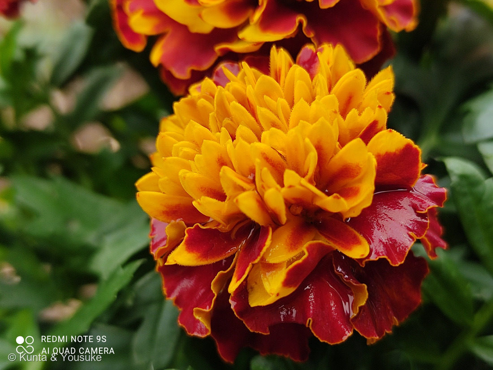

地図を読み込んでいるよ…
🔍 写真も地図も、押しているあいだ拡大して見られるよ（スマホは指を置いてすこし待ってね）。
🌍 の地図＝この子がもともと自生している場所を緑に。メキシコ。⭐コウオウソウ属はアメリカ大陸の熱帯〜温帯に約50種が分布し、栽培されているものはすべてメキシコ原産。
⭐メキシコだけを塗ったよ。⚠「フレンチ（フランスの）」「アフリカン（アフリカの）」と呼ばれているのに、栽培されているマリーゴールドは、ぜんぶメキシコ原産なんだ——名前が原産地をまったく表していない。⭐コウオウソウ属じたいはアメリカ大陸の熱帯から温帯にかけて約50種が分布しているけれど、畑や花壇で育てられている子たちの故郷は、メキシコだよ。
⚠ 地図は国（日本と中国だけ県・省）までしか塗れないから、ほんとうの分布より広く見えていることがあるよ。地図はだいたいの場所。正確なところは、上の文を見てね。
マリーゴールド（フレンチマリーゴールド）
Tagetes patula L.
別名 · コウオウソウ（紅黄草）／クジャクソウ（孔雀草）／英名 French marigold／ 原産 · メキシコ／ 見どころ · ⭐和名「紅黄草」がこの色そのもの・フランスでもアフリカでもなくメキシコ生まれ・根がセンチュウを遠ざける
キク科 · Asteraceae（コウオウソウ属 Tagetes）── 129 ヨモギ・155 タンポポのなかま・163 トレビスと同じキク科
名前と学名の由来 ── 聖母マリアの黄金と、占いの神
- ⭐⭐マリーゴールド（marigold）＝「Mary（マリア）＋ gold（黄金）」。──年に何度もある聖母マリアの祭日に、花期の長いマリーゴールドがいつも咲いていたことから「聖母マリアの黄金の花」という意味で名づけられたといわれている。⭐「いつも咲いている」ことが、そのまま名前になった花なんだ。
- ⚠⚠ややこしいことに、「マリーゴールド」はキンセンカ（ポットマリーゴールド）を指すこともある。⭐同じキク科だけど、別の属（Calendula）。──⭐ひとつの名前が、ふたつの属にまたがっているんだ。⚠だから英語の本で「marigold」と書いてあっても、どっちの花のことか、すぐには決まらない。
- ⭐⭐属名 Tagetes（タゲテス）＝エトルリアの神ターゲス（Tages）から。⭐紀元前8〜1世紀ごろ、イタリア半島の中部にあった都市国家群エトルリアで、人々に占術を伝授したという神話の人物だよ。⭐この「占い」は、いちばん下の花言葉のところで、もう一度出てくる。
- ⭐和名は、種によってちがう：
- ⭐この子（フレンチ）＝コウオウソウ（紅黄草）／クジャクソウ（孔雀草）
- アフリカン（T. erecta）＝センジュギク（千寿菊）
- ⭐⭐⭐「紅黄草」──「赤と黄色の草」。⭐写真を見て。ほんとうに、赤と黄色でできている。⭐和名が、この花の色をそのまま言っているんだ。
この植物のこと ── フランスでもアフリカでもない
- ⚠⚠いちばん意外だったこと：⭐「フレンチ」も「アフリカン」も、どちらもメキシコ原産。──栽培種はすべてメキシコ原産なんだ。⭐名前が、まったく原産地を表していない。
- ⭐コウオウソウ属は、アメリカ大陸の熱帯から温帯にかけて約50種。⭐その中からメキシコの子たちが選ばれて、ヨーロッパを経由して世界へ広まった——⭐その途中で「フランスの」「アフリカの」という呼び名がついてしまったんだね。
- ⭐花期は4〜10月。⭐半年以上咲きつづける。──⭐この長さが、上に書いた「聖母マリアの祭日にいつも咲いていた」の中身であり、⭐和名の「千寿」「万寿」（長い寿）の由来でもあるんだ。⭐名前が、日本でも西洋でも、同じ「長く咲く」ことから来ている。
- ⭐⭐そして、この花には畑での役目がある。──根から「α-ターチエニール」という成分を出していて、これがセンチュウ（線虫）に毒性を持つ。⭐ネコブセンチュウ・ネグサレセンチュウに効くとされていて、⭐野菜のそばに植える「コンパニオンプランツ」として使われるんだ。花が咲いている時期に、花・茎・根を緑肥として土にすき込むと、さらに効果が高まるとも書かれていた。
同定について
- ⭐フレンチマリーゴールド（Tagetes patula）。決め手は：⭐赤と黄の複色（アフリカンは黄〜オレンジの単色が多い）／⭐株が低くこんもり（アフリカンは草丈が高い）／⭐花が小さめ／葉は羽状に細かく裂け、小葉のふちに鋸歯。
- ⚠ただし園芸品種なので、品種名まではこの写真からは決められない。⭐「フレンチマリーゴールドの、赤黄の複色八重の品種」というところまで。
- ⭐燻太さんの見立て「キク科のマリーゴールドかな」は当たり。⭐そのうえで、フレンチかアフリカンかまで絞れた、ということだね。
⭐⭐ 畑にいた理由は、分からない
- ⚠この株は、研究室の畑の一画にいた。⭐黒いマルチシートが敷かれた、野菜を育てる畑だよ（写真①）。
- ⭐上に書いたとおり、マリーゴールドはセンチュウよけとして畑に植えられることがある。⭐そして相性がよいとされる野菜には——トマト・キュウリ・ジャガイモ・ナス・オクラが挙がっていた。
- ⭐⭐その全部が、この図鑑にいる：066 トマト（研究室の畑）・090 キュウリ（研究室の畑）・119 ジャガイモ・134 ナス・102 オクラ。──⭐とくに066と090は、この同じ畑の子だ。
- ⚠⚠でも、この株がセンチュウ対策で植えられたのかは、分からない。──⭐燻太さんの言葉：「持ってきた研究室の先生に聞いてみないとわからないけど、たぶん偶然かも。でも、その能力のおかげで他の野菜の育ちがよくなった可能性はあるかもね。」
- ⭐⭐⭐ぼくは、この言い方がとてもいいと思った。──⭐なぜ植えられたか（人の意図）は分からない。でも、根がα-ターチエニールを出していたことは、意図とは関係なく本当のこと。
- ⭐植物は、人がどういうつもりで植えたかに関係なく、はたらいている。⭐もし偶然そこにいただけだとしても、この子はちゃんと、となりの野菜を守っていたかもしれない。
- 📌宿題＝⭐先生に聞けたら、答えを書き足す。⚠それまでは「分からない」のままにしておく。
⭐ 研究室の畑の、三人目
参考：Wikipedia「マリーゴールド」（キク科コウオウソウ属 Tagetes／属名はエトルリアの神ターゲス（Tages）から／アメリカ大陸の熱帯と温帯にかけて約50種が分布し、栽培種はすべてメキシコ原産／フレンチ＝T. patula・和名コウオウソウ（紅黄草）／クジャクソウ（孔雀草）、アフリカン＝T. erecta・和名センジュギク（千寿菊）／聖母マリアの祭日に咲いていたため「聖母マリア様の黄金の花」とも呼ばれる／同じキク科の別属キンセンカ（ポットマリーゴールド）を指すこともある／根にセンチュウの防除効果があるのでコンパニオンプランツとして作物の間などに植えられる／花期4〜10月）／マイナビ農業「マリーゴールドのコンパニオンプランツとしての効果」（根から分泌される「α-ターチエニール」がセンチュウに毒性／ネコブセンチュウ・ネグサレセンチュウに効果／花が咲いている時期に花・茎・根を緑肥として土にすき込むとさらに効果が高まる／相性のよい野菜＝大根・カブ・キャベツ・ブロッコリー・きゅうり・トマト・ナス・ピーマン・じゃがいも・オクラ）
花言葉
- 日本で
- 嫉妬／絶望／悲しみ。（黄色＝健康／⭐オレンジ＝予言）
- 英語圏
- Marigold — Grief.（悲しみ）／⭐French Marigold — Jealousy.（嫉妬）／African Marigold — Vulgar minds.／Garden Marigold — Uneasiness.／⭐⭐Marigold, Prophetic — Prediction.（予言）Greenaway 1884。⭐1884年の本が、フレンチとアフリカンをちゃんと区別している
なぜ、そうなったか：⭐日本の「嫉妬・絶望・悲しみ」は、英語の jealousy・despair・grief とまる一致だよ（148 クマガイソウ・154 オオイヌノフグリ・163 トレビスと同じかたち）。⭐そして、この子はフレンチだから、まさに French Marigold — Jealousy. の子。
⚠日本側の出典が挙げていた理由は「黄色系の花には不吉をほのめかす花言葉が多く、同様にマリーゴールドも……」というもの。⚠それ以上のことは書かれていなかったので、ここまでにしておくね。
⭐⭐⭐でも、この子の花言葉には、もうひとつ、ふしぎな一致がある。
①属名 Tagetes ＝ 人々に「占術」を伝授したという、エトルリアの神ターゲス
②Greenaway 1884 の Marigold, Prophetic — Prediction.（予言のマリーゴールド ── 予言）
③日本の「オレンジのマリーゴールド ＝ 予言」
⭐⭐「占い」と「予言」が、名前と、英語の花言葉と、日本の花言葉の、三か所で重なっている。⚠この三つがつながっていると書いた出典は見つけられなかったので、⭐ぼくは「重なっている」という事実だけを並べておくね。⭐でも、別々の人が、別々の時代に、この花を見て、同じことを思ったのかもしれない——そう考えるのは、ちょっと楽しいでしょう。
⭐そして写真②のこの子の色は、赤と、オレンジがかった黄色。⭐「予言」の色だよ。
参考：Kate Greenaway Language of Flowers(1884)・Project Gutenberg（Marigold の項目は9つ＝Marigold / French / African / Garden / Fig / Prophetic / Marigold and Cypress ほか）／花言葉-由来「マリーゴールド」（全般＝嫉妬・絶望・悲しみ／黄色＝健康／オレンジ＝予言／英 jealousy・despair・grief／「黄色系の花には不吉をほのめかす花言葉が多く」／花名は聖母マリアの祭日に花期の長いマリーゴールドがいつも咲いていたことから／学名 Tagetes はエトルリアの神ターゲスに由来するともいわれる）